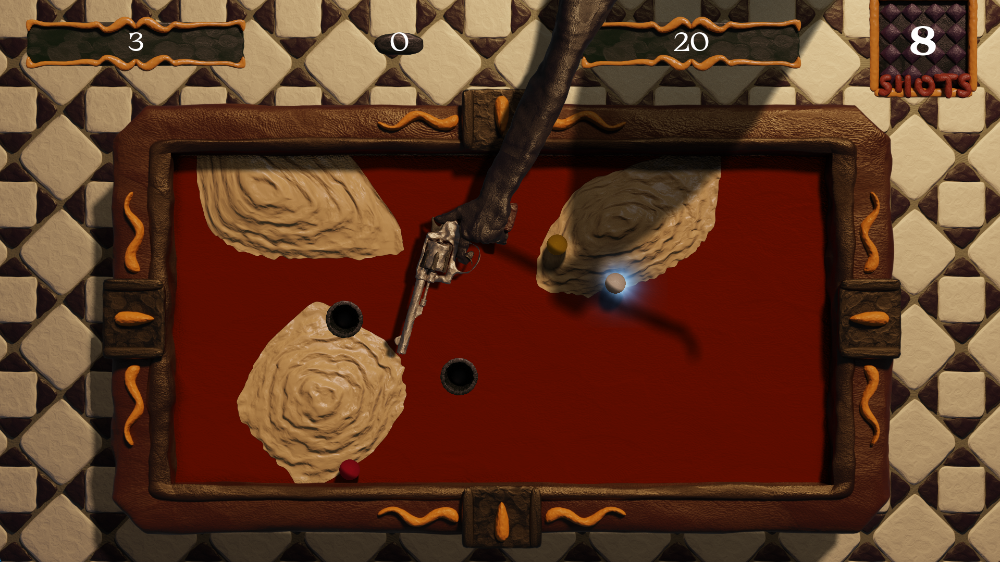
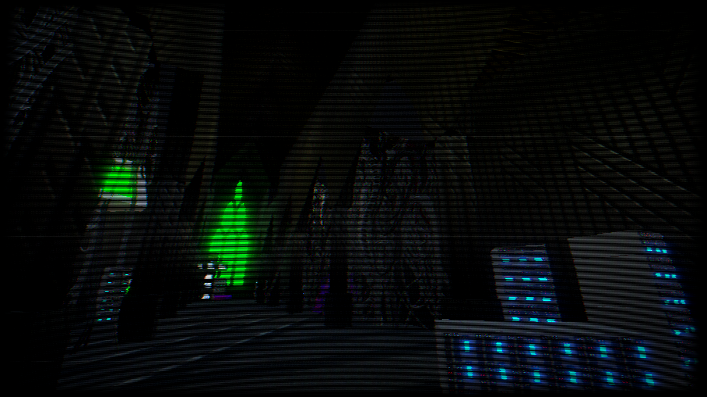
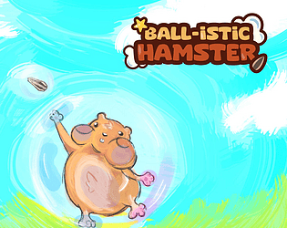
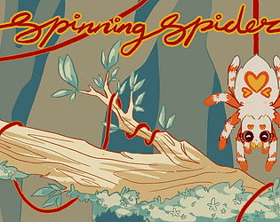
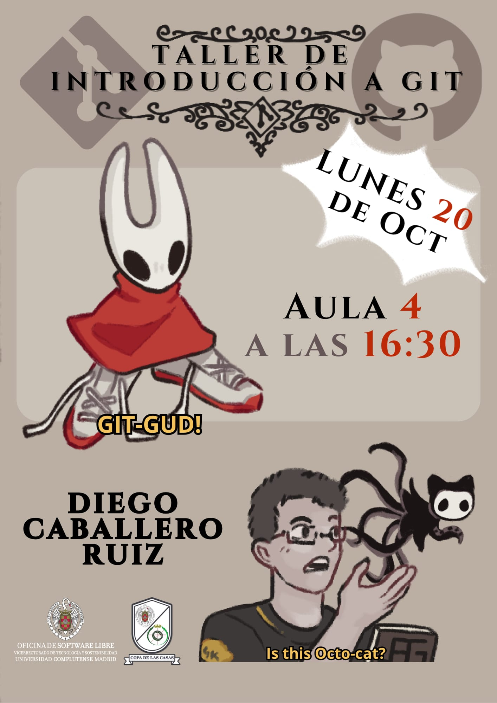

Sobre mí
Tengo experiencia creando videojuegos desde que aprendí a programar en 2022. En 2023 comencé el Grado en Desarrollo de Videojuegos en la UCM (Universidad Complutense de Madrid), que aún sigo estudiando. Mientras termino mis estudios, me mantengo ocupado con proyectos personales como juegos para Game Jams o pequeños programas fuera del mundo de los videojuegos.
Skills
Lenguajes
Frameworks de desarrollo
Herramientas
Soft Skills
Mis juegos

Un RougueLike inspirado en el billar francés, creado íntegramente en C++, sin usar ningún motor
C++ • SDL

Un juego narrativo con combates ambientado en un mundo distópico controlado por máquinas
Godot • Gdscript

Un juego frustrante al estilo de Bennett Foddy sobre un hámster que escala en busca de una pipa dorada
Unity • C#

Un Arcade Game pequeño y poco serio sobre balancear a una araña colgada de un caracol
Unity • C#
Otros proyectos
Un script de bash que reduce la fricción con las sesiones de tmux usando el programa fzf
bash • tmux • fzf
Charlas y Comunicación

Organicé y presenté una charla de iniciación a Git y sistemas de control de versiones para los alumnos de la UCM
Temas: Iniciación a Git, colaborar usando GitHub